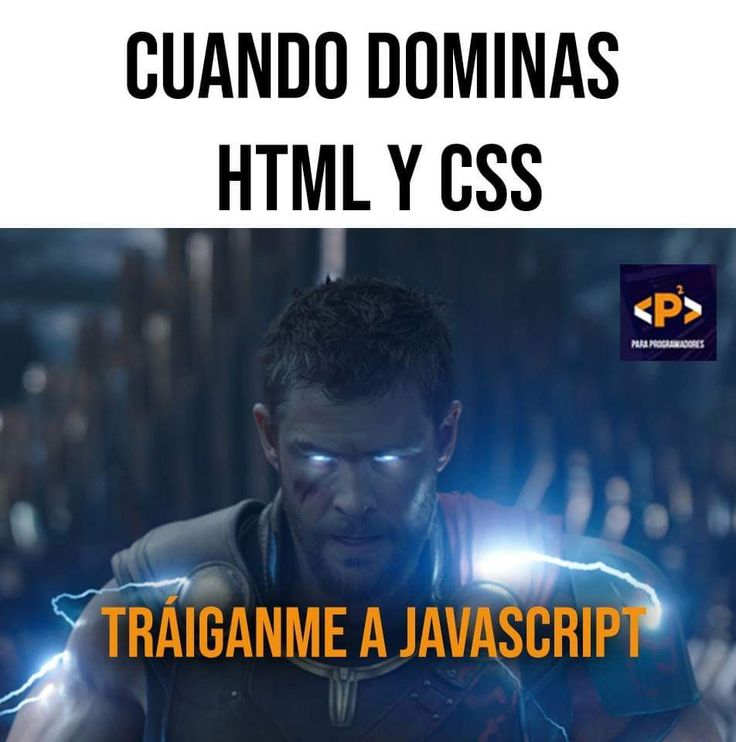

El Estudio Técnico Especializado en Computación es una oportunidad que, la verdad, vale la pena, ya que no es cualquier curso: es algo que solo nosotros, como alumnos de la ENP, podemos tomar.

Aquí no solo ves Word o PowerPoint como siempre. Aprendes a usar bien herramientas como Excel, a entender la lógica de las bases de datos y a conocer la lógica del funcionamiento de una computadora desde dentro.
Todo eso sirve un buen en la vida diaria y más adelante en lo laboral. Además, al terminar puedes obtener una cédula profesional.
La verdad, ahora es el momento para tomarla en cuenta y decidir si te atrae o no el tema. En sexto ya no se puede meter ya que dura dos años, así que si te llama la atención, valdria la pena intentarlo.